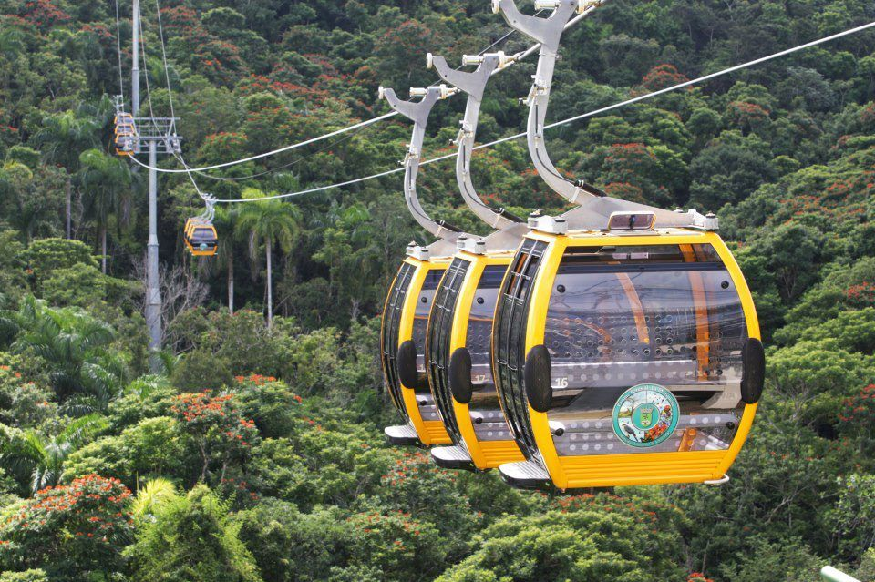
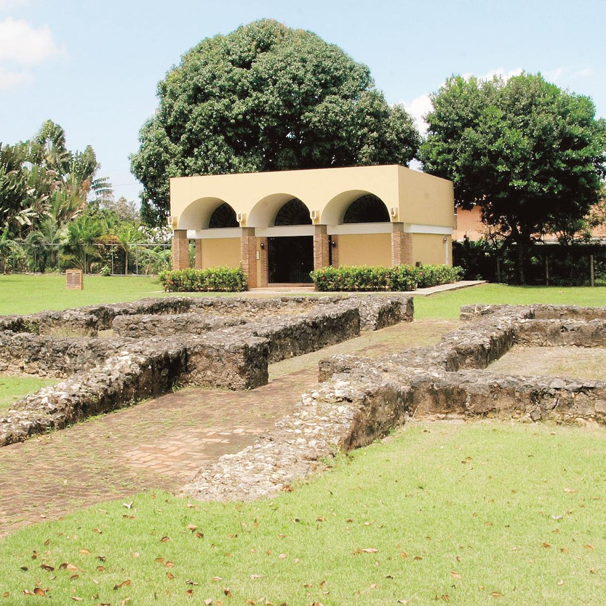
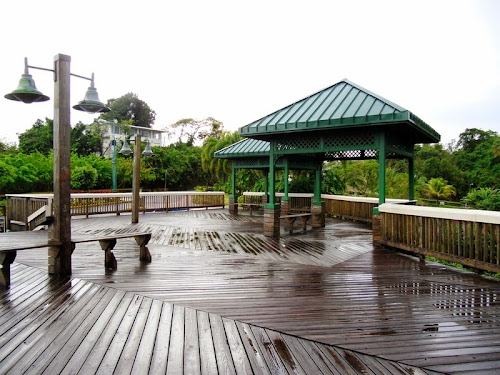

Parque Forestal La Marquesa
El Parque Forestal La Marquesa es un parque ecológico ubicado a 15 minutos del área metropolitana, un “pulmón verde” para el disfrute de toda la familia. El parque, ubicado en el Cerro La Marquesa en la colonia Sonadora, cuenta con seiscientas hectáreas de terreno densamente poblado de árboles.
-
Pueden visitar en:
- Dirección: PR-834, Guaynabo 00957
Sitio Arqueológico de Caparra
El Sitio Arqueológico de Caparra es un Monumento Histórico Nacional que abarca la ubicación y los restos significativos de la primera capital de Puerto Rico, algunas de las evidencias más antiguas de los españoles en el "Nuevo Mundo". El sitio arqueológico de Caparra ha proporcionado información que ha sido fundamental para comprender los primeros materiales y técnicas de construcción en Puerto Rico, así como el colonialismo español en la región de las islas del Caribe.
-
Pueden visitar en:
- Dirección: CV4P+3F5, PR-2, Guaynabo, 00966
El Museo del Transporte
-
Pueden visitar en:
- Dirección: 9V5M+CQR, Av. Sta. Rosa, Guaynabo, 00969
Mirador Gavillán
En el Mirador Gavillán podran disfrutar de una de las vistas más impresionantes y hermosas de toda el área metropolitana de Puerto Rico. Con una altitud de unos 670 pies sobre el nivel del mar, ¡puedes ver unas 5 ciudades al mismo tiempo! ¡Por la noche las vistas también son únicas! Es un excelente lugar para todos, parejas, familia, amigos o solo!
-
Pueden visitar en:
- Dirección: PR835, Guaynabo, 00969, Puerto Rico, 00969